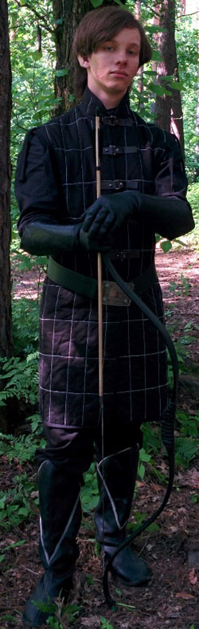

Личная страница Мираэля
Статус: Драар 
Любимое оружие:
Samick SKB 50
История Мираэля
Он родился в доме Ксолариин (Клинки Сумрака) – четвертом правящем доме Мензоберанзана и хотя с младых лет его учили поклоняться Ллос, он не чувствовал душевного родства с Темной Богиней.
С детства второй сын Матери - хранительницы был склонен к уединению и раздумьям, не пренебрегая, однако, физической подготовкой и искусством боя и вскоре превзошел многих старших Воинов дома. Он всегда предпочитал оружие дальнего боя, и каждый раз как стрела с оперением мрака срывалась с тетивы, на шее у него покачивался медальон скорпиона. Этот медальон эльф нашел однажды в одной из пещерок, коими усыпаны окрестности города, он был испещрен древними рунами и слегка блестел в свете Нарбондели. Таково было детство Тахлиире До’Ксолариина.
Свою юность он провел в Сорцере – академии магов, постигая алхимию и практическую магию, в это время он развивал свой разум, не распыляя внимание на интрижки нижнего города. За это время он стал одним из мудрейших сравнительно со сверстниками, однако, из-за любви к спорам с преподавателями, сразу после выпуска был спешно возвращен в свой дом, а озлобленные профессора еще долго шипели, вспоминая его.
Подобно паучьей сети, в Мензоберанзане плетутся интриги и, не подозревая того, молодой эльф оказался намертво вплетен в заговор, что создавался матерями двух нижестоящих домов. Однажды, будучи командиром патрульной команды, что оглядывала окрестности города, он был подло атакован в спину воинами, однако врожденное чутье заставило руку саму выхватить клинок и отразить удар. Один против дюжины – шансов на победу не было, однако волей богов потолок пещеры обвалился, закрыв его, истекающего кровью, от клинков своих бывших союзников.
Найдя странную пещеру, в которой лежали полуистлевшие клочья ткани и кожи, он подлечил раны и поспешил на поверхность, в надежде, что там его не станут преследовать и когда-то он сможет вернуться и отомстить. Выйдя из сумрака, он направил свои стопы к месту, о котором учителя академии говорили как о «ледяном аду, в который однажды сбежал лиловоглазый демон», этим местом была Гора мира, что своими могучими кряжами отгородила Долину Ледяного Ветра от остального мира.
Огибая поселения и удивляясь многообразию верхнего мира Фаэруна, он менялся изнутри, древняя кровь светлой ветви бурлила при виде прекрасных восходов, или тихих озер, надежно спрятанных меж лесными чащами. И вот когда он увидел прекрасный, сияющий мириадами серебряных звезд, кряж Горы Мира он окончательно отвергнул прежний образ жизни. Там же он провел обряд отречения от Ллос, избрав путь веры Дж'Имасро и взял себе имя, увиденное на одном из фолиантов, пылящихся на самых дальних полках Академии, имя Мираэль – Обретший Себя. Отныне медальон скорпиона стал не просто побрякушкой, он стал символом новой веры Мираэля, символом чести и справедливости, ведь скорпион – образ в котором Дж'Имасро являлся в мир смертных.
Как-то раз, прогуливаясь по величественным отрогам, он заметил вдали селение. Наблюдая за его жителями в течение нескольких дней, и не замечая среди них ссор, он понял, что, возможно, это и есть то королевство Вельдрин, о котором в академии ходили слухи, будто бы оно было создано тем самым первым Отступником, чьи глаза сияли будто аметисты.
Надеясь обрести новый дом, и впервые в своей жизни встретить существ мыслящих как он сам, юный, но повидавший многое Мираэль вступил под сень дома Владыки и присягнул ему на верность. И каждый раз, когда с его тетивы срывалась стрела с оперением цвета палой листвы, на его шее раскачивался медальон в форме скорпиона, теперь обретший смысл.